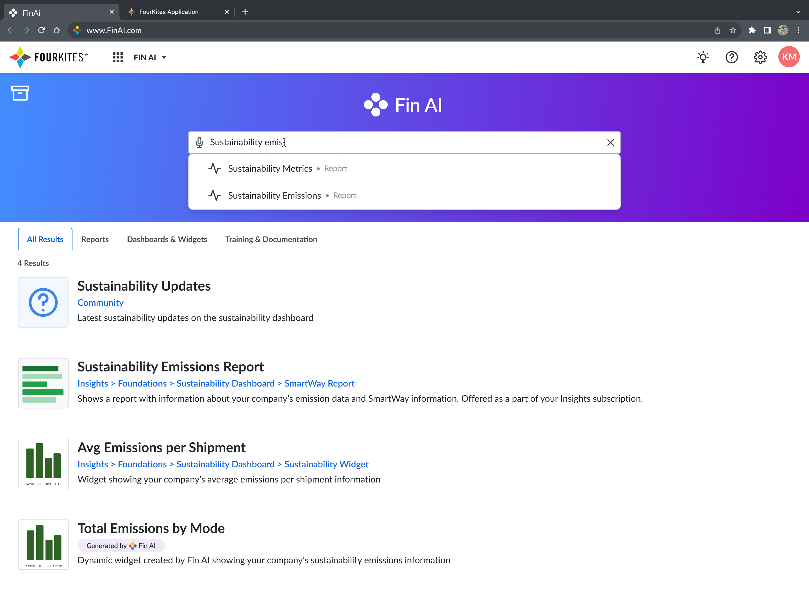
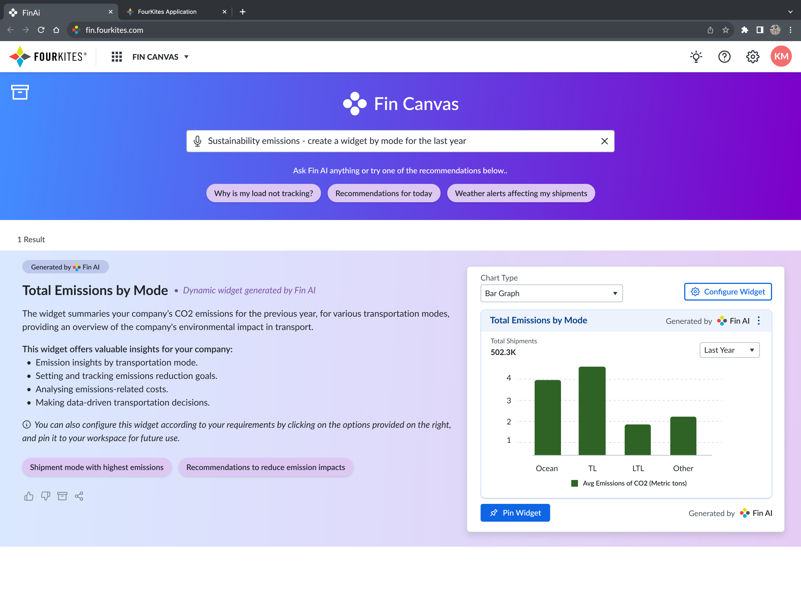
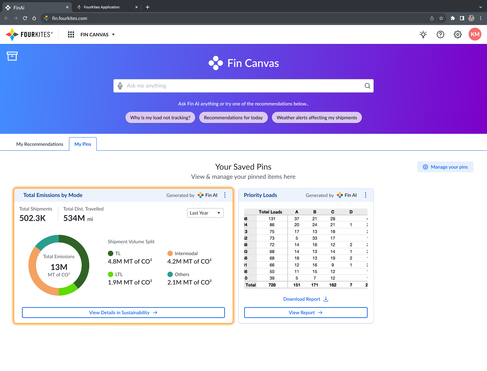
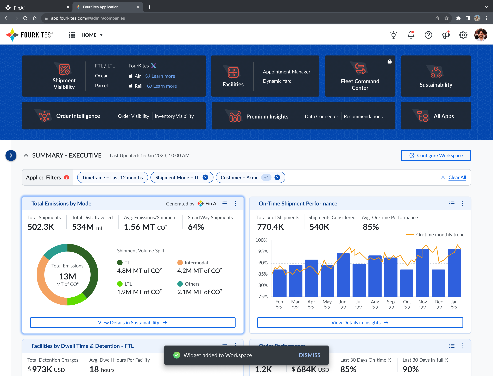

FourSight AI: Conversational End-to-End Supply Chain Intelligence
An AI-native, natural-language interface that turned FourKites' data network into a conversation.
Design Leadership · AI/ML Integration · 3 minute read
Evolving into FourSight AI
FourSight AI began as a simple chat interface. Customers could ask natural-language questions about their shipment network and get a direct answer back, no dashboards or reports required. Over time, it evolved into something far more capable: generating widgets on the go, delivering personalized responses tailored to each user, and producing more robust, actionable outcomes across the network.
Built on top of an industry-leading language model (LLM) and FourKites' largest supply chain data network, FourSight AI helps customers surface buried insights, identify opportunities for optimization, and automate time-consuming tasks, like assessing the impact of a disruption across an entire shipment network. It's a significant milestone in shifting supply chain managers from reactive to proactive decision-making, and toward automated supply chain orchestration at scale.
FIN Canvas: Advanced Capabilities
FIN Canvas is where that evolution took shape: the AI-powered experience layer that took FourSight AI beyond plain text responses, aiming to revolutionize user interactions with a simple, intuitive, and future-proof experience. In anticipation of significant shifts in user behavior, FIN Canvas addresses the evolving needs of users who demand streamlined, clutter-free applications.
FIN Canvas is designed to deliver precise, timely solutions to users. It emphasizes a minimalistic UI while maximizing impact and functionality.
Key Focus Areas:
- Minimal UI & Maximum Impact: Simplified user interfaces to enhance usability and reduce cognitive load.
- Real-Time Responsiveness: Immediate feedback and interaction capabilities to keep users engaged and informed.
- Generate Widgets on the Go: Dynamic widget creation to provide users with the tools they need when they need them.
- Personalized & Tailor-Made: Customizable experiences tailored to individual user preferences and behaviors.
- Futuristic Design Approach: Innovative design strategies that anticipate and adapt to future user behavior trends.
FIN Canvas redefines the user experience by focusing on simplicity, efficiency, and personalization. Its AI-driven approach ensures that users receive the exact functionality they need at the precise moment they need it, positioning FIN Canvas as a leading solution for modern enterprise applications.
Interactive Prototype: FIN Canvas
How it works
That groundwork has since scaled into a fuller product, built directly into FourKites Intelligent Control Tower®. Instead of navigating dashboards, users get instant answers to complex questions simply by asking: no navigation, no configuration, no waiting. 10x faster insights compared to building reports and dashboards by hand, 5x broader adoption across teams who aren't analytics experts, and a zero learning curve, since there's no training required, just ask a question and get an answer.
FourSight AI queries FourKites' entire network (shipments, orders, inventory, yard operations), connecting four kinds of questions to real answers.
Step 1 · Instant Answers
Get instant answers across your entire supply chain
FourSight AI queries your complete network (shipments, orders, inventory, yard operations) to deliver immediate insights.
Step 2 · Disruption Impact
Understand disruptions and their impact on your operations
FourSight AI cross-checks your network against current and forecasted disruptions, connecting events to operational impact.
Step 3 · Root Cause
Identify root causes instantly
Quickly determine what's driving delays, exceptions, or performance issues across your network.
Step 4 · Business Outcomes
Connect operational challenges to business outcomes
Instantly tie disruptions to revenue impact and customer exposure.
See it in action
Two short demos of FourSight AI, straight from FourKites:
Product overview: what it feels like to ask FourSight AI a question.
Use case walkthrough: getting instant answers across a shipment network.
Watch the FIN Canvas video demo to see the natural-language interaction model in action.




